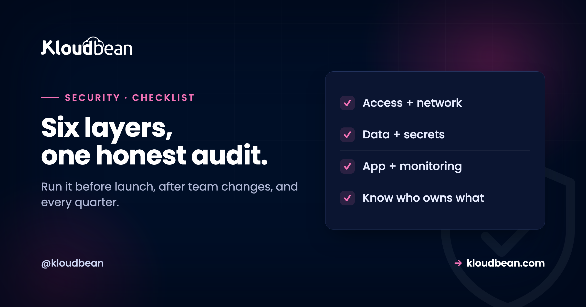

The Server Security Audit Checklist (With the Why for Each Item)

Most security checklists are a wall of boxes with no explanation, so you tick them without knowing what you are actually protecting against, which is its own kind of insecurity. This one is organized by layer and gives you the reason behind each item, because a control you understand is one you will keep, and one you understand is one you can adapt when your situation changes. Run it before a launch, after any team change, and on a regular cadence such as quarterly. It will not make you certified, and it is not exhaustive for every regulated context, but it covers the ground where most real incidents actually happen, and each item links to a deeper guide when you want more.
A practical audit walks six layers. Access: strong authentication, least-privilege permissions, and no stale accounts. Network: a deny-by-default firewall, brute-force banning, and restricting admin surfaces. Data: encryption in transit and at rest, and tested backups. Secrets: nothing sensitive in code, with rotation and scoped keys. Application: updated dependencies, security headers, and safe input handling. Monitoring: a tamper-proof audit trail and alerting. On a managed platform, several of these are handled at the infrastructure layer by default, such as the firewall, brute-force protection, SSL, and patching, while application security, secrets hygiene, and access reviews remain your responsibility. Use the checklist quarterly and before launches, and treat it as a floor, not a certificate.
How to use this checklist
A checklist is only useful if you run it at the right moments and read it in the right spirit.
Run it at three trigger points: before you launch anything public, whenever someone joins or leaves the team, and on a regular schedule such as every quarter. Work top to bottom, and for any item you cannot honestly tick, either fix it now or write down why it is acceptable, because an undocumented gap is one you will forget. Two caveats keep you honest. First, ticking every box does not make you compliant with any specific framework; formal compliance is assessed against your whole organisation, not a list. Second, this is a strong general baseline, not a substitute for expert review in a heavily regulated context. With that framing, the six layers below are where the effort pays off.
1. Access and authentication
Most breaches start with someone getting in as a legitimate user, so this layer is the highest value.
- Strong authentication on every account. A password alone is not enough given breach dumps and phishing; use a second factor or social login so a stolen password is useless. Why it matters and how to choose is in two-factor and social login.
- Least-privilege permissions. Each person and service should have only the access they need, so a compromised account does limited damage. For a team or client fleet, this is subusers and access control.
- No stale access. Remove accounts and keys for people who have left and contractors who are done. Offboarding without revoking access is a door left open behind someone.
- SSH keys, not passwords. Disable SSH password login in favour of keys, which removes password-guessing as an attack entirely.
- Hardened sessions. Session cookies should be HttpOnly, Secure, and SameSite, so a stolen or script-read cookie does not hand over the account after login.
2. Network and perimeter
Before anything reaches your app, decide what can reach the server at all, and from where.
- Deny-by-default firewall. Close every port you are not using so the internet's constant scanning finds nothing. This is the host firewall half of Fail2ban and Shorewall. On Kloudbean both are applied to every server automatically, so these two rows are usually true before you start auditing; the rules you add on top are still yours to get right.
- Brute-force banning. Automatically ban IPs that hammer login on the doors you must keep open, like SSH, which is the Fail2ban half of the same guide.
- Restrict admin surfaces by address. Lock dashboards, database GUIs, and admin panels to your office and VPN with IP allowlisting, so they are not open to the world.
- Gate non-public environments. Put staging and pre-launch sites behind a Basic Auth gate so they stay private and out of search results.
- App-layer and volumetric protection. Filter malicious requests with a WAF and absorb floods with DDoS protection at the edge. These are different layers from the host firewall, and you want them too. Notice the commercial shape of this row: edge protection is nearly always a paid add-on rather than a default, the Cloudflare add-on on Kloudbean included, where it's free only on enterprise accounts. Budget for it instead of assuming it.
3. Data protection
Protect the data itself, in both the states it lives in, and make sure you can get it back.
- Encryption in transit, everywhere. HTTPS on all traffic with HTTP redirected to HTTPS, so nothing travels in the clear. Free auto-renewing SSL removes the excuse, and on a managed platform like Kloudbean issuing and renewing the certificate is a click, so an expired cert becomes a non-event rather than a Monday morning.
- Encryption at rest. Disks, databases, backups, and object storage encrypted, so stolen media is unreadable, remembering it protects the media, not the live app. Both states are in encryption at rest and in transit.
- Backups that are automatic and tested. A backup you have never restored is a guess; take them automatically, ship them off the server, and actually test a restore, per the backups guide. Kloudbean runs automatic backups and lets you take an on-demand one right before a risky change, which is the version of this checkbox people actually use. Nobody, us included, can tell you your restore works until you've run one.
- Know where your data lives. For regulated or regional obligations, be clear on data residency, because "somewhere in the cloud" is not an answer an auditor accepts.
4. Secrets
The keys to everything deserve their own layer, because one leaked key can undo every other control.
- No secrets in code or git. Keys, passwords, and tokens never go into the repository, because git history is permanent and bots scan public repos in seconds.
- Secrets in the environment, not the bundle. Application secrets live in server-side environment variables, never in the frontend bundle where anyone can read them.
- Rotate, especially after exposure. If a secret leaks, rotating it is the only real fix; deleting the commit does not help. Rotate on a schedule and when people leave.
- Scoped, least-privilege keys. Each key does only what it needs, so a leak is contained. The full discipline is in the secrets management guide.
5. Application security
The layers above protect the server; this one is the app you actually wrote, which no host can secure for you.
- Dependencies updated. Known vulnerabilities in outdated packages are among the most exploited paths in; keep them current and watch advisories.
- Guard the OWASP basics. Validate and sanitise input, use parameterised queries against SQL injection, and escape output against cross-site scripting.
- Security headers set. A Content-Security-Policy and friends reduce whole classes of client-side attack; see the security headers guide.
- Scan container images. If you ship containers, scan them for known vulnerabilities before they run, as in container security scanning.
- Patch the OS. The operating system and web stack need patching on a cadence; on a managed platform this is handled for you, which is a real load off. Be precise about the line, though. Kloudbean patches the OS and the stack, while the packages in your
package.jsonorrequirements.txtstay entirely yours. Plenty of teams read managed as covering both and get bitten by a two-year-old library.
6. Monitoring and evidence
You cannot respond to what you cannot see, and you cannot prove what you did not record.
- A tamper-proof audit trail. Record who did what, when, and from where, in a log that cannot be edited or deleted, so it survives the very person you need to catch. This is the audit trail for compliance.
- Retention that matches your obligations. Keep logs long enough, often many months, because incidents are frequently discovered late.
- Alerting on the events that matter. Failed logins, permission changes, and firewall changes should raise a flag, not just sit in a log nobody reads.
- Uptime and health monitoring. Know when something is down before your users tell you, so an outage is not the first sign of a problem.
Who covers what: platform versus you
A recurring confusion is assuming the host secures everything, or that you must do it all yourself. The truth is a split, and knowing it is half the battle.
| Layer | Managed platform typically covers | You own |
|---|---|---|
| Network | Host firewall, brute-force banning, edge options | Allowlist rules, WAF tuning for your app |
| Data in transit | Free SSL, HTTPS enforced | Using HTTPS everywhere in your app |
| Data at rest | Disk, database, storage encryption (managed) | Classifying and minimising what you store |
| Patching | OS and web stack updates | Your app's dependencies |
| Access | Social login, session hardening, subusers | Who you grant access to, and reviews |
| Secrets | Env-var storage, scoped tokens | Not committing secrets, rotating them |
| App security | The infrastructure it runs on | The code, OWASP, input handling |
| Evidence | Infrastructure audit trail (enterprise) | App-level logging, reviewing the trail |
The pattern is consistent: the platform hardens the infrastructure, and you own the application and the decisions. Neither side can do the other's job, which is why "is it secure?" is always a shared answer.
What an unticked box costs you later
Checklists get skipped because the cost of skipping is invisible right up until it isn't. So here's the incident each layer produces when it's left undone. Use it to argue for time, and to decide what to fix first when you can't fix everything.
- Access. Skipped, you get account takeover using a password that leaked somewhere else entirely, months ago, with no second factor to stop it. This is the cheapest layer to fix and the one that shows up in incident write-ups most often.
- Network. Skipped, you get an SSH login attempt every few seconds forever, an admin panel indexed by a scanner, and eventually a staging database someone found because nothing gated it.
- Data. Skipped, the outage that would have cost you an hour costs you the business, because the backup nobody tested turns out to be empty, partial, or on the same disk that died.
- Secrets. Skipped, a key in a public repo becomes a five-figure cloud bill overnight, or quiet access to your production database that nobody notices for weeks.
- Application. Skipped, a known vulnerability in a dependency you never updated does the work for the attacker. Nothing exotic, just a CVE published a year ago against a version you're still running.
- Monitoring. Skipped, the breach still happens, but you can't say when it started, what was taken, or who did it. Which is the difference between an incident and an unbounded liability.
Now the honest part, and it applies to us as much as anyone. No host fixes the right-hand column of that table. Kloudbean cannot update your dependencies, write your input validation, decide which contractor still needs access, stop a key going into git, or read the audit trail on your behalf. Those aren't features anyone can ship, and they're where most breaches actually begin. What the infrastructure layer can do is stop being your problem, so the attention you have left goes to the items only you can own. Same division, seen from the platform side, in the secure and compliant hosting guide.
Working through the rest of the hardening
Each layer has a deeper guide: Fail2ban and Shorewall, IP allowlisting, the Basic Auth gate, two-factor and social login, secrets management, encryption at rest and in transit, and the audit trail. The pillar that ties them together is secure and compliant hosting.
Patched, firewalled, and backed up.
The platform keeps the server, stack, SSL, and patching current, with automatic backups running. Application-level security stays yours, and that split is deliberate rather than hidden.
- ✓ Shorewall firewall
- ✓ Fail2ban
- ✓ OS patching handled
- ✓ Free SSL
- ✓ IP access control
- ✓ Automatic backups
Plans from $8/mo · Free migration assistance · Free trial
FAQ
How often should I run a security audit?
Run it at three moments: before launching anything public, whenever someone joins or leaves the team, and on a regular schedule such as quarterly. Launches and team changes are when new gaps appear, and a quarterly cadence catches drift the rest of the time. For fast-moving teams, tie parts of it to your deployment process so the most important checks happen continuously rather than only at review time.
Does passing this checklist make me compliant?
No. This is a strong general security baseline, but formal compliance with a framework like SOC 2, ISO 27001, or PCI DSS is assessed against your whole organisation, including processes and documentation, not a single checklist. Passing it means you have covered the ground where most incidents happen, which is genuinely valuable and a good foundation, but treat it as a floor to build on rather than a certificate.
What is the most important item on the list?
If forced to pick, strong authentication and least-privilege access, because most breaches begin with someone getting in as a legitimate user. Adding a second factor defeats stolen-password attacks outright, and least privilege limits the damage when an account is compromised. Encryption, backups, and monitoring all matter, but the access layer is where the highest-value, lowest-effort wins usually are.
Which items does a managed host handle for me?
Typically the infrastructure layer: the host firewall, brute-force protection, SSL, OS patching, and often backups and encryption at rest. On Kloudbean that also includes IP Access Control, a Basic Auth gate, social login, hardened sessions, and an enterprise audit trail. What no host can do is your application security, your access decisions, your secrets hygiene, and reviewing the logs, which is the right-hand side of the responsibility split.
I am a solo developer. Is this overkill?
No, though you can prioritise. The access, secrets, backups, and HTTPS items are essential even for one person, and they are mostly quick wins. Some monitoring and evidence items scale with team size and regulatory need, so a solo side project can be lighter there than a company handling customer data. Start with authentication, backups, and not committing secrets, and grow the rest as your project does.
What is the difference between this and a penetration test?
This checklist is a self-assessment of whether your controls are in place; a penetration test is an active attempt by specialists to break in and find weaknesses you missed. They are complementary: the checklist gets your baseline right so a pen test is not wasted finding obvious gaps, and the pen test then probes for the subtle flaws a checklist cannot capture. Regulated environments usually require periodic penetration testing on top of a checklist like this.
How do I handle an item I cannot tick?
Either fix it now or write down explicitly why it is acceptable for your situation, with a date to revisit. An undocumented gap is one you will forget and cannot defend; a documented, accepted risk is a deliberate decision you can review. The goal of the checklist is not a perfect score but an honest, current picture of where you stand and why, so treat gaps as decisions to record rather than boxes to fudge.
Does Kloudbean help with the whole checklist?
It covers a large part of the infrastructure layer by default, including the firewall and brute-force baseline, free SSL, automatic backups, OS patching, IP Access Control, a Basic Auth gate, social login, and an enterprise audit trail. The application-layer items, your code, dependencies, input handling, access decisions, and secrets hygiene, remain yours, because they depend on choices only you can make. The platform shrinks the list; it does not erase your half of it.